Invitation
Heritage is framed with restraint, enough detail to feel considered, and a private route forward.
House / 01
House opens as a clear luxury decision hub: what Maison offers, who it helps, why it matters, and which route to take first.
The first screen combines positioning, proof, primary action, and fast internal navigation, so people can act immediately or compare the rest of the house route with context.
Deep-green private hero
Select the closest route and Maison keeps the next step, proof, and follow-up expectation aligned with status and discretion.
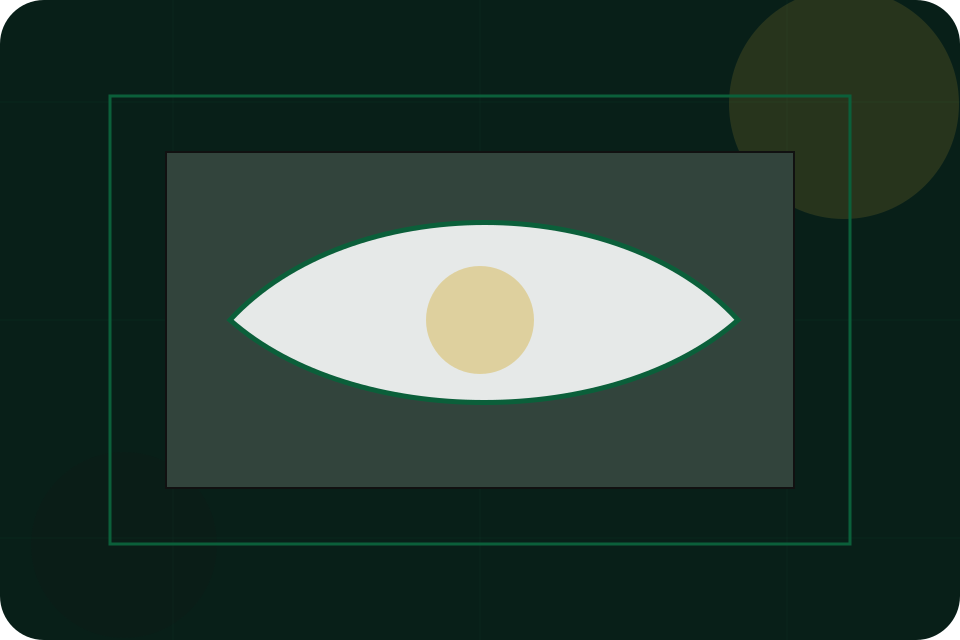
House / 02
Heritage adds luxury context to the house route, using the heritage luxury maison structure to support status and discretion before visitors choose a next step.
Maison uses gold hairline cards and focused copy to make the decision easier to scan, aligning the section with status and discretion rather than filling space.
Explore House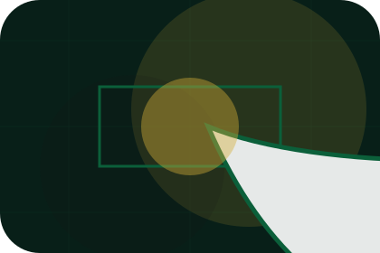
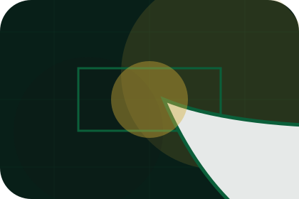
Heritage is framed with restraint, enough detail to feel considered, and a private route forward.
House / 03
Founder introduces the people, roles, or specialist credibility behind Maison so the decision feels less anonymous.
The copy ties names, roles, credentials, or availability back to the decision on the page instead of treating profiles as decorative biographies.
Explore HouseFounder is framed with restraint, enough detail to feel considered, and a private route forward.
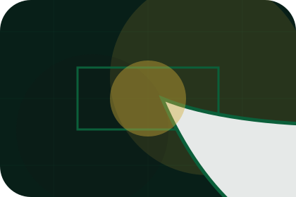
The proof appears through standards, context, and carefully chosen visual evidence rather than volume.
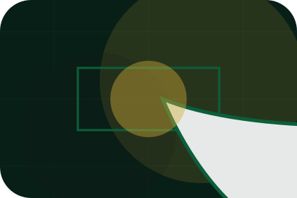
The next action explains what to send, when to expect a response, and how access is handled.
House / 04
Recognition adds luxury context to the house route, using the heritage luxury maison structure to support status and discretion before visitors choose a next step.
Maison uses gold hairline cards and focused copy to make the decision easier to scan, aligning the section with status and discretion rather than filling space.
Explore HouseRecognition is framed with restraint, enough detail to feel considered, and a private route forward.
The proof appears through standards, context, and carefully chosen visual evidence rather than volume.
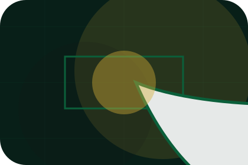
The next action explains what to send, when to expect a response, and how access is handled.
House / 05
Values adds luxury context to the house route, using the heritage luxury maison structure to support status and discretion before visitors choose a next step.
Maison uses gold hairline cards and focused copy to make the decision easier to scan, aligning the section with status and discretion rather than filling space.
Explore HouseValues is framed with restraint, enough detail to feel considered, and a private route forward.
The proof appears through standards, context, and carefully chosen visual evidence rather than volume.
The next action explains what to send, when to expect a response, and how access is handled.
House / 06
Craft adds luxury context to the house route, using the heritage luxury maison structure to support status and discretion before visitors choose a next step.
Maison uses gold hairline cards and focused copy to make the decision easier to scan, aligning the section with status and discretion rather than filling space.
Explore HouseCraft is framed with restraint, enough detail to feel considered, and a private route forward.
The proof appears through standards, context, and carefully chosen visual evidence rather than volume.
The next action explains what to send, when to expect a response, and how access is handled.
House / 07
Standards gives the proof layer for house: standards, evidence, and reassurance that make the next decision feel grounded.
Instead of relying on vague claims, Maison presents visible standards, process cues, and proof artifacts that help luxury visitors judge fit.
Explore House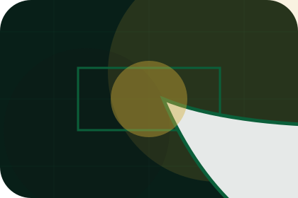
Standards is framed with restraint, enough detail to feel considered, and a private route forward.
The proof appears through standards, context, and carefully chosen visual evidence rather than volume.
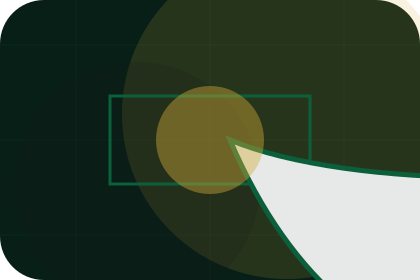
The next action explains what to send, when to expect a response, and how access is handled.
House / 08
Taste adds luxury context to the house route, using the heritage luxury maison structure to support status and discretion before visitors choose a next step.
Maison uses gold hairline cards and focused copy to make the decision easier to scan, aligning the section with status and discretion rather than filling space.
Explore HouseTaste is framed with restraint, enough detail to feel considered, and a private route forward.
The proof appears through standards, context, and carefully chosen visual evidence rather than volume.
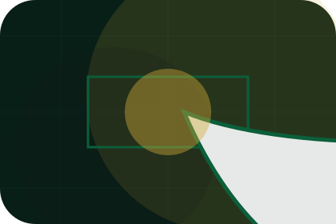
The next action explains what to send, when to expect a response, and how access is handled.
House / 09
Trust gives the proof layer for house: standards, evidence, and reassurance that make the next decision feel grounded.
Instead of relying on vague claims, Maison presents visible standards, process cues, and proof artifacts that help luxury visitors judge fit.
Explore HouseTrust is framed with restraint, enough detail to feel considered, and a private route forward.
The proof appears through standards, context, and carefully chosen visual evidence rather than volume.
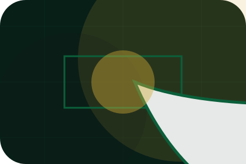
The next action explains what to send, when to expect a response, and how access is handled.
House / 10
Maison closes the house route with a clear action, a quick reminder of the value, and a low-friction way to request private access.
Visitors who are ready can use the primary action. Visitors who are still comparing can scan the section links, proof, and support routes before they request private access.
Request Private AccessThe final block keeps the choice simple: act now, compare one more proof route, or send enough detail for a focused response.
Request Private Accessstatus and discretion
A luxury service site with green-gold maison mood, heritage cards, private access routes, and discreet proof. House ends with a direct path to request private access, plus enough context for visitors who still need to compare.
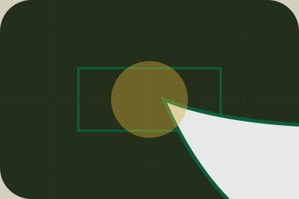
Request Private AccessInformation is provided for planning and should be reviewed for the final client, location, and operating rules.